Sem arena: vocês jogam no endereço combinado e a partida já sai confirmada.
Nível do jogo


Visibilidade
Seleção de time
Cada partida de Beach tennis tem 4 jogadores.
Formato
Pontuação
1 set de 6 games, com 2 de vantagem (7-5 ou 7-6).
Partidas em arena ficam pendentes até ela aprovar.
Nível do jogo
Beach tennis
Aberta03/10 · 18:00 · Rua das Gaivotas, 120 - Campeche
Bia MoreiraCarol PradoConvite pendenteBeach tennis
Aberta03/10 · 18:00 · Rua das Gaivotas, 120 - Campeche
Rua das Gaivotas, 120 - Campeche, Florianópolis, SC
Beach tennis
PendenteAguardando a arena aprovar esta partida.
Você recebe uma notificação assim que a arena decidir.
Carol PradoConvite enviadoCaio NunesConvidar Camila ReisConvidar de novo
Camila ReisConvidar de novoPartidas em arena ficam pendentes até ela aprovar.
Nível do jogo
Visibilidade
Beach tennis
AbertaBia MoreiraCapitãoCarol PradoADuda MartinsCapitãoBeach tennis · 4 jogadores por partida
Partidas geradas
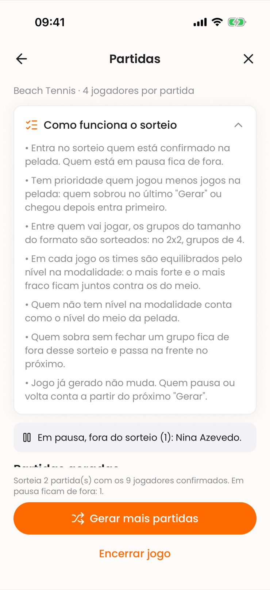
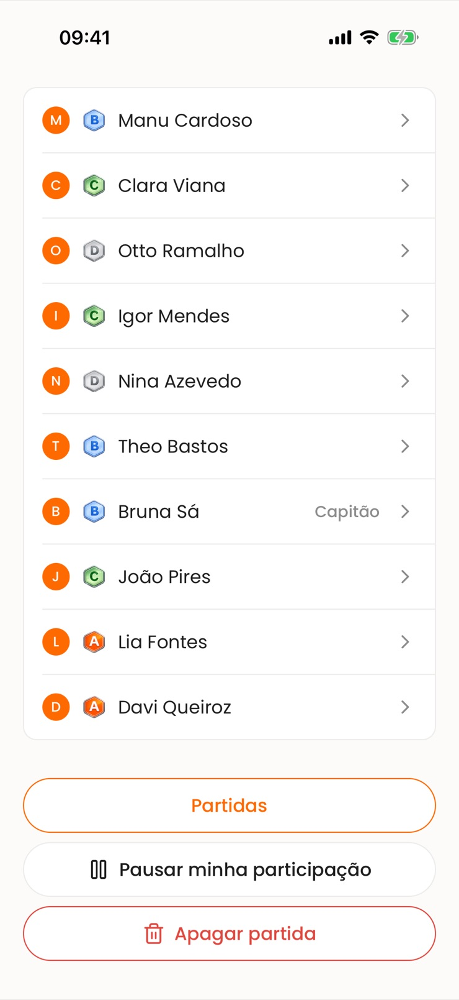
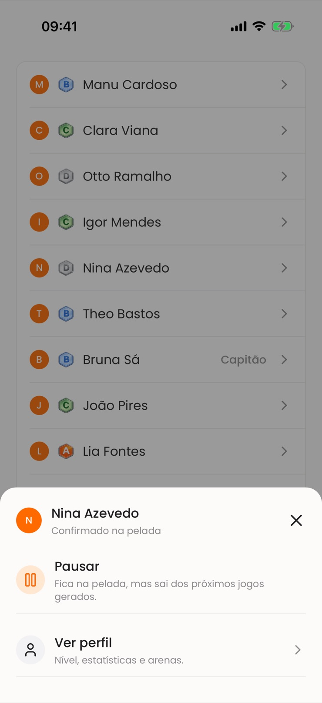
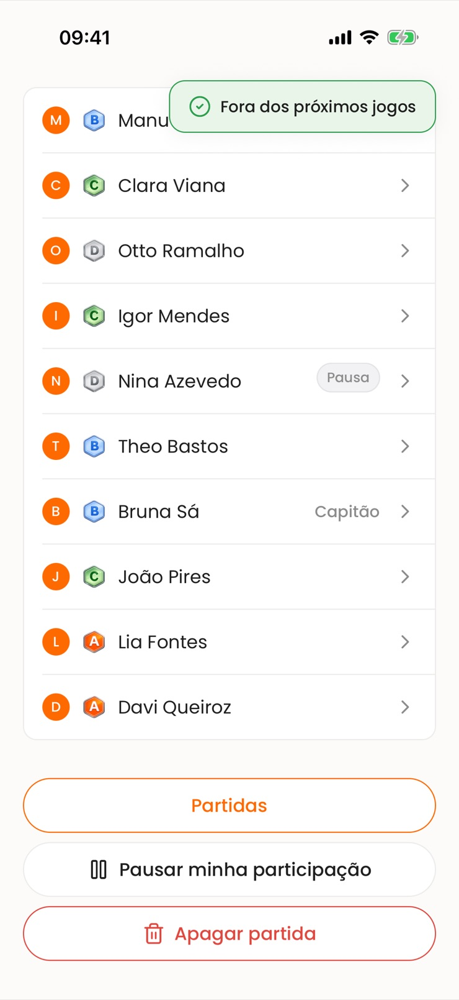
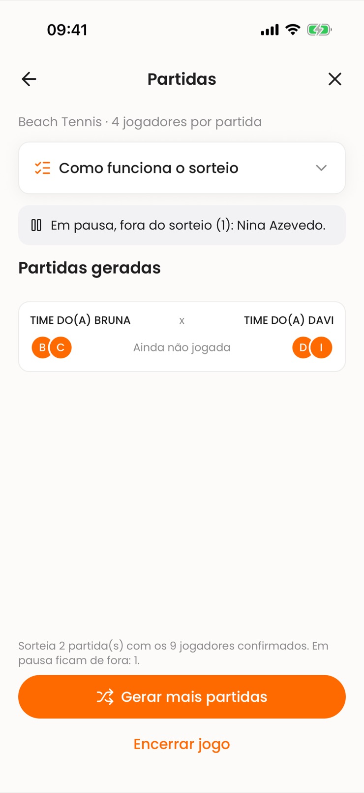
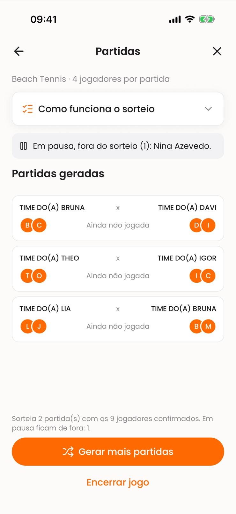
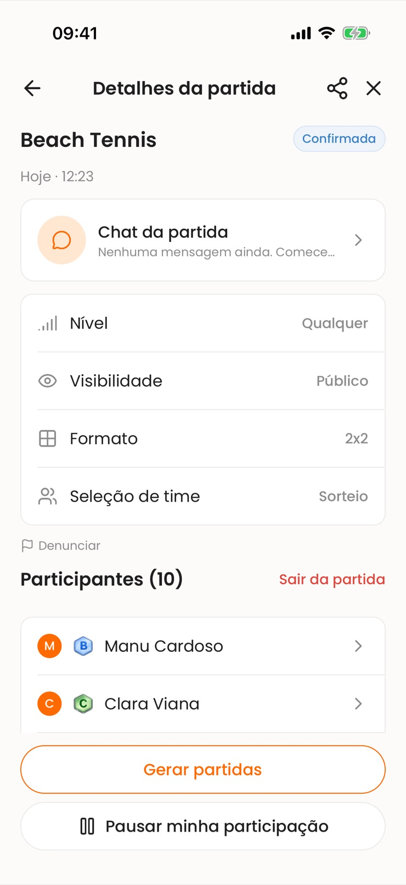
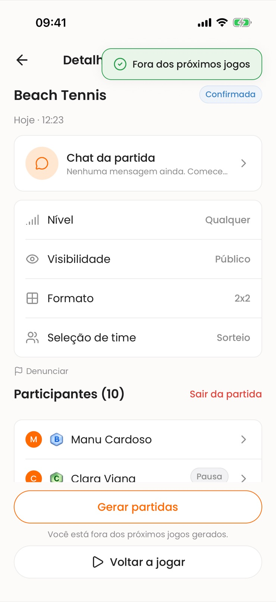
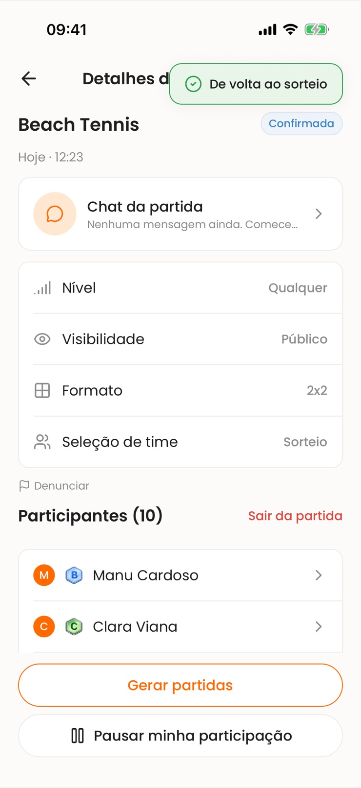
Beach tennis · 4 jogadores por partida
Quem venceu?
Quem venceu recebe 3 pontos; quem jogou, 1. É isso que monta o ranking.
Beach tennis
AbertaBia MoreiraVocê2 V · 3 JCarol Prado2 V · 3 JLara Mendes1 V · 3 JCaio Nunes0 V · 3 J3 pts por rodada vencida, 1 por rodada jogada (V = vitórias, J = rodadas). Empate em pontos divide a posição.
Beach tennis
ConcluídaBia Moreira7 ptsCarol Prado7 ptsLara Mendes5 ptsTati Freitas5 ptsCaio Nunes3 ptsEste jogo já foi encerrado — só é possível visualizar.
5 de 8 participantes votaram
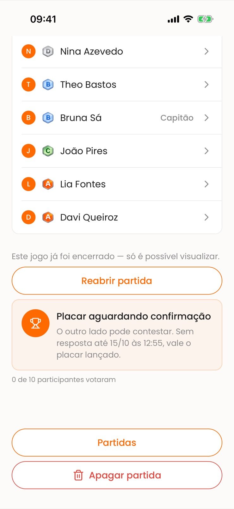
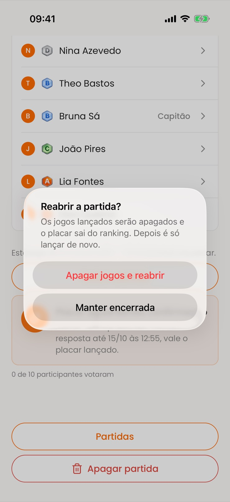
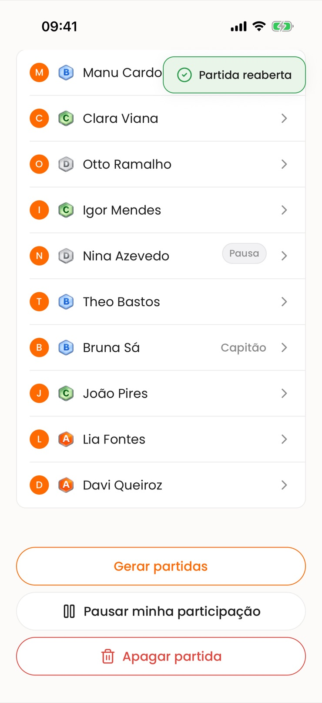
Escolha quem foi o craque da partida. Você pode trocar o voto até a votação fechar.

Você é o craque do jogo!
A votação terminou e você foi o mais votado na partida de Beach tennis.
4 voto(s) recebido(s)
Seu desempenho
Atividade recente
Beach tennis
AbertaConte o que aconteceu. Sua denúncia é confidencial — quem você denunciou não fica sabendo.